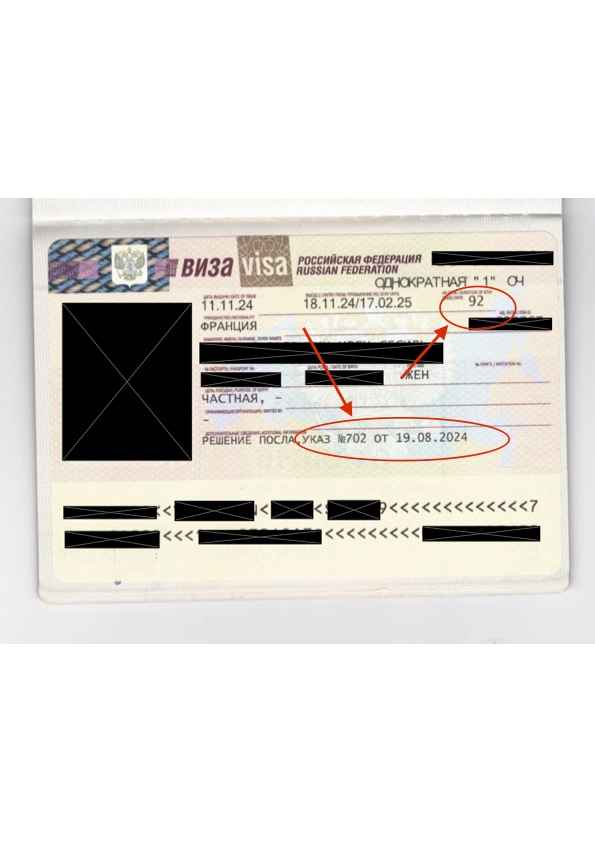

Переезд в Россию по программе «разделения ценностей» — специальный правовой маршрут для иностранцев, отвечающих условиям Указа № 702. Он позволяет обратиться за разрешением на временное проживание (РВП) без квоты и без документа о знании русского языка, истории и законодательства РФ. В предусмотренных случаях для въезда можно запросить специальную частную визу сроком до трёх месяцев.
Мы поможем определить, подходит ли программа лично вам и вашей семье, подготовить документы до выезда и последовательно пройти необходимые процедуры в России. Сначала индивидуальная стратегия — затем сопровождение по согласованному плану.
Это возможность обратиться за визой и РВП, а не гарантия положительного решения. Другие требования и основания отказа сохраняются.
Узнайте, подходит ли вам программа
Указ № 702 рассчитан на иностранцев, желающих переехать в Россию из государства своей гражданской принадлежности или постоянного проживания по мотивам непринятия указанной в Указе государственной политики. Перечень государств и территорий определён распоряжением Правительства РФ № 2560-р.
Для предварительного анализа важны ваше гражданство, постоянное проживание, действующий миграционный статус, предыдущие поездки в Россию и состав семьи. Гражданство страны из списка само по себе не означает автоматического одобрения.
Наш подход: сначала проверяем право и возможные препятствия — затем рекомендуем оформление визы и покупку билетов.
Получение визы и подготовка документов
Для заявителей, которым требуется виза, Указ предусматривает возможность выдачи однократной обыкновенной частной визы сроком до трёх месяцев. Решение принимает российское дипломатическое представительство или консульство. Виза не выдаётся автоматически; конкретный срок и перечень документов определяются при обращении.
Самое важное — получить справку о наличии или отсутствии судимости ещё до поездки. Обычно нужна справка компетентного органа с апостилем либо иной необходимой легализацией и заверенным переводом. Для подачи на РВП важна её актуальность: консульские разъяснения указывают срок три месяца с момента выдачи.
Подготовьте паспорт, документы о проживании, заявление о мотивах переезда и визовую анкету; проверьте правила того консульства, куда планируете обращаться.

Практический совет: сначала рассчитывайте календарь получения справки, записи в консульство и подачи документов в МВД; только затем — дату поездки.
Прибытие в Россию: что сделать в первую очередь
Добро пожаловать в Россию! Важно не только приехать, но и с первых дней соблюдать миграционные правила, чтобы не осложнить оформление РВП.
- Проверьте и сохраните миграционную карту, если она оформляется при въезде.
- Организуйте миграционный учёт по реальному месту пребывания. Общий срок уведомления — семь рабочих дней после прибытия, но действуют специальные правила и исключения; для гостиниц порядок иной.
- Подготовьте нотариально удостоверенные переводы иностранных документов, если они требуются.
- Выберите регион, где действительно планируете проживать и подавать документы.
- При необходимости займитесь СНИЛС, Госуслугами, мобильной связью и банком: это полезные бытовые шаги, но не универсальные условия получения РВП.

Медицинские документы, переводы и заявление
На этом этапе готовят заявление о выдаче РВП, проверяют иностранные документы, проходят медицинское освидетельствование и иные необходимые процедуры.
Обратите внимание на 30-дневный срок. Для предусмотренного специального маршрута консульские разъяснения требуют представить медицинские документы в территориальный орган МВД в течение 30 суток со дня въезда; при документально подтверждённых уважительных причинах возможен особый порядок. Сроки и порядок для вашей ситуации необходимо проверить заранее.
Медицинское освидетельствование проходит в уполномоченной организации. Также нужны фотографирование и дактилоскопическая регистрация в установленном порядке.

Мы проверяем документы на несоответствия до обращения в МВД: просроченные справки, неточные переводы и ошибки в заявлении часто стоят заявителю времени.
Обращение за РВП в МВД России
Заявление на РВП подают в уполномоченный орган в установленном порядке. Подача требует подготовки полного комплекта и соблюдения миграционного режима; при необходимости мы сопровождаем заявителя и взаимодействие с должностными лицами.
Получите подтверждение принятия заявления. Это особенно важно при приближении окончания визы. Закон предусматривает ситуации, когда принятие документов на РВП влияет на обязанность выехать по окончании разрешённого срока пребывания, но не делает старую однократную визу многократной и не означает автоматическое право на повторный въезд.
Срок рассмотрения определяется применимым порядком: для некоторых визовых заявителей действует общий срок до четырёх месяцев; для безвизовых процедур могут действовать иные сроки. Не следует переносить один срок на все случаи.

После получения РВП: что меняется
При положительном решении и оформлении РВП вы получаете статус временно проживающего иностранного гражданина. Обычный срок РВП — три года. Это позволяет планировать жизнь, работу и развитие бизнеса в России в пределах условий вашего статуса, но сохраняет ряд обязанностей.
«К нам обращаются разные люди: семьи с детьми, предприниматели, будущие фермеры, специалисты и те, кто просто решил связать свою жизнь с Россией. Я хотел объяснить программу понятным языком: не только показать её возможности, но и предупредить о действиях, которые могут осложнить переезд. Мы поможем составить индивидуальную стратегию и пройти согласованные юридические этапы».
Лев Втюрин
Основатель SalutRussie · более 20 лет юридической практики
Частые вопросы о переезде по Указу № 702
Планируете переезд в Россию?
Опишите ваше гражданство, страну проживания, состав семьи и предполагаемую дату переезда. Мы определим возможный правовой маршрут, документы и основные риски до начала затрат.
Получить консультацию по Указу 702 →Правовая основа и подробная инструкция
- Указ Президента РФ от 19.08.2024 № 702 и его официальное опубликование.
- Распоряжение Правительства РФ от 17.09.2024 № 2560-р — перечень государств.
- МИД России: разъяснения консульства о специальной визе и подготовке документов.
- МИД России: визовый порядок и медицинские документы.
Для подробного юридического анализа читайте экспертную статью «РВП по Указу № 702: условия, документы и правовые риски». Здесь изложен практический путь переезда и юридического сопровождения.